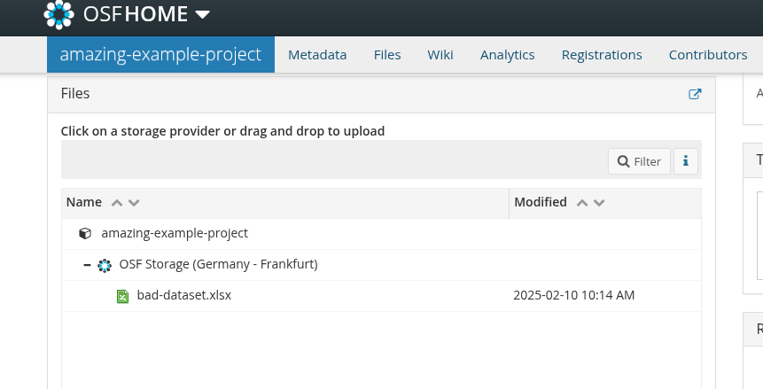
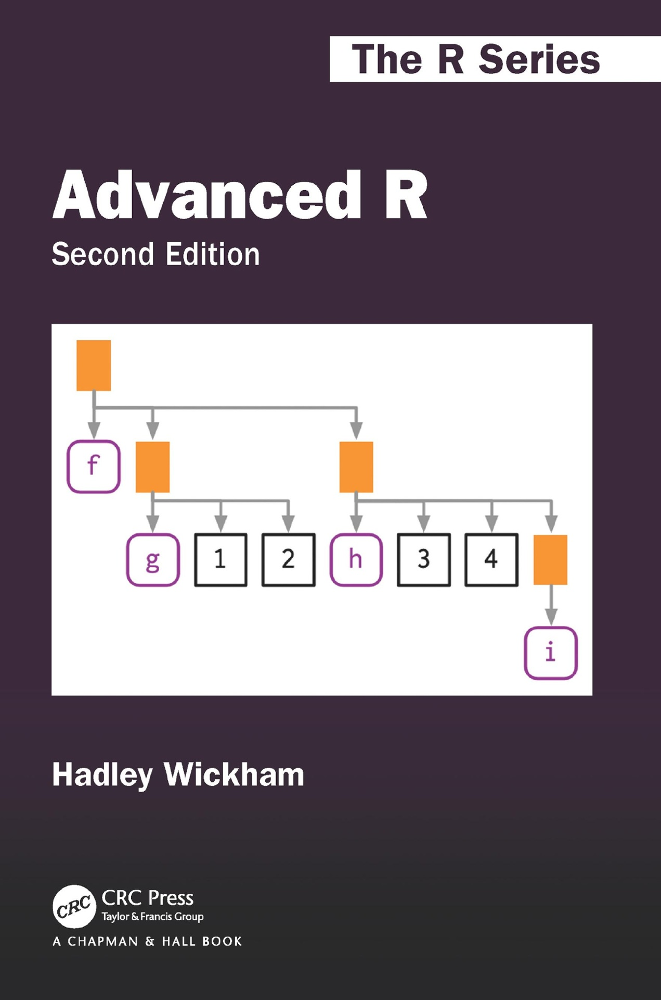
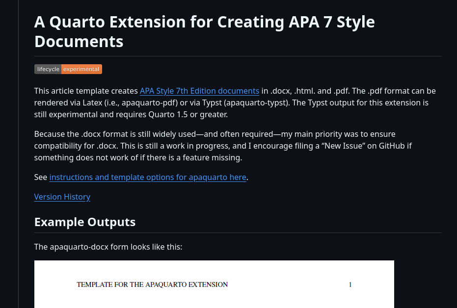

| x1 | x2 | x3 | x4 | x5 | x6 | x7 |
|---|---|---|---|---|---|---|
| 0.3981105 | 13.912435 | a | 0 | -0.6775811 | 0.8759740 | -0.2051604 |
| -0.1434733 | 1.093743 | c | 0 | 0.7055193 | 0.2521987 | 1.8816947 |
| -0.2526000 | 4.898035 | c | 0 | 0.4744651 | -0.5628840 | 0.3245589 |
| -1.2272588 | 14.717053 | b | 0 | -0.5132792 | -1.1368242 | -0.1355150 |
| -0.4360417 | 8.547025 | c | 1 | -0.1736804 | -0.7120962 | -1.2714320 |
Reproducible Science
Margherita Calderan
Replicability School
June 6, 2025
About me üëã
- Post-doctoral researcher in Cognitive Psychology, University of Padova.
- Research: Computational modeling of cognitive and learning processes, Bayesian hypothesis testing.
- PhD in Psychological Science, completed March 6, 2025.
- Passionate about reproducible science after struggling with disorganized datasets in my early research!
Our job is hard üî•
Running experiments
Analyzing data
Managing trainees
Writing papers
Responding to reviewers

Reproducibility helps!
Organizes your workflow.
Saves time by documenting steps.
Builds trust in your findings.
Enables others to reproduce and extend your work.
What is reproducible science?
At its core, reproducible science means that someone else, or even you, in the future, can reproduce your results from your materials: your data, your code, your documentation.
It means your workflow is transparent.
Keys to reproducible science üîê
- Data: organize, document, and share your datasets in ways that are usable by others and understandable by you (even years later).
- Code: write analysis scripts that are clean, transparent, and reusable..
- Literate programming: combine code and text in the same document, so your reports are dynamic and replicable.
- Version Control and Sharing: track changes, collaborate, and make your work openly available using tools like GitHub and OSF.
So… Is reproducible science even harder?
At first, yes - but then‚ĶüßØüî•
- Helps you stay organized.
- Makes it easier to remember what you did.
- Allows others to understand, reproduce, and build on your work.
Learning the tools takes effort but once you do, your workflow becomes smoother, clearer, and more reliable.
Outline
Data
Code
R projects
Literate Programming
Version Control
Data
Data types in research
- Raw Data: Original, unprocessed (e.g., survey responses).
- Processed Data: Cleaned, digitized, or compressed.
- Analyzed Data: Summarized in tables, charts, or text.

Open Science Framework
- Free platform to organize, document, and share research.
- Supports preregistration, archiving, and collaboration.
- Integrates with GitHub, Dropbox, Google Drive.
Bad data sharing example
Imagine this scenario: you read a paper that seems really relevant to your research. At the end, you’re excited to see they’ve shared their data on OSF. You go to the repository, and there’s one file…
Bad data sharing example
You download it, open it, and you see this: . . .
What do these variables mean? What’s x3?
What do 0 and 1 represent? How are missing values coded?
Is x6 a z-score or raw data?
Good data sharing practices
- Use plain-text formats (e.g.,
.csv,.txt). - Include a data dictionary with variable descriptions.
- Add a README with key details.
- Follow FAIR principles (Findable, Accessible, Interoperable, Reusable).
Data dictionary üìÇ
- A data dictionary defines each variable in your dataset.
- Boosts transparency and collaboration.
- Saves time for collaborators and future-you.
datadictionary üì¶
library(datadictionary)
df <- data.frame( id = factor(letters[1:5]),
anxi = rnorm(5, 0, 1),
edu = factor(c("PhD", "BSc", "MSc", "PhD", "BSc")))
df_labels <- list(
anxi = "Beck Anxiety Inventory, standardized",
edu = "Last degree obtained"
)
create_dictionary(df, id_var = "id", var_labels = df_labels) item label class summary value
1 Rows in dataset 5
2 Columns in dataset 3
3 id Unique identifier unique values 5
4 missing 0
5 anxi Beck Anxiety Inventory, standardized numeric mean 1
6 median 0
7 min -0.46
8 max 1.52
9 missing 0
10 edu Last degree obtained factor BSc (1) 2
11 MSc (2) 1
12 PhD (3) 2
13 missing 0Data dictionary - Good data sharing example
{width = 300}
README files
A README file is the first thing someone sees when they open your dataset/project folder. It should answer basic questions like:
- What is this dataset?
- How was it collected?
- What are the variables?
README - Good data sharing example
README - Good data sharing example
FAIR data principles üîç
- Findable: Use metadata and DOIs to make data easy to locate.
- Accessible: Ensure data is retrievable via open repositories.
- Interoperable: Use standard formats (e.g.,
.csv,.txt) for compatibility. - Reusable: Include clear documentation and open licenses.
Data licensing üîí
A license tells others what they can and can’t do with your data. If you don’t include one, legally speaking, people might not be allowed to use it, even if you meant to share it openly.
Code
Scripts
Reproducible: You can rerun them.
Documented: You can see what you did and when.
Shareable: Others can inspect and reproduce your analysis.
R and RStudio üíª
- R: Free, open-source, with thousands of packages for analysis.
- RStudio: Intuitive interface for coding, plotting, and debugging.
- Vibrant community for support and resources.
- Scripting ensures transparent, reproducible workflows.
The SPSS Workflow
Click menu items to run analysis
“exclude <18”
Click through everything again
Forget a step? Round differently?
Now the results don’t match the manuscript…
Stressful, error-prone, and undocumented.
Writing better code üìù
- Organize scripts: Load packages and data upfront.
- Comment clearly: Document your logic for clarity.
- Name descriptively: Use
snake_caseorcamelCasefor readability.
Organized scripts
Global operations at the beginning of the script:
- loading packages
- loading datasets
- changing general options (
options())
Use descriptive names
Another best practice: name your variables clearly.
Consistency helps too. Use either snake_case or camelCase, but pick one and stick to it.
Summary
- Scripts beat point-and-click
- Structure matters
- Comment often
- Name things well
Functions to avoid repetition
Functions are the primary building blocks of your program. You write small, reusable, self-contained functions that do one thing well, and then you combine them.
Avoid repeating the same operation multiple times in the script. The rule is, if you are doing the same operation more than two times, write a function.
A function can be re-used, tested and changed just one time affecting the whole project.
Functional Programming, example…
We have a dataset (mtcars) and we want to calculate the mean, median, standard deviation, minimum and maximum of each column and store the result in a table.
mpg cyl disp hp drat wt qsec vs am gear carb
Mazda RX4 21.0 6 160 110 3.90 2.620 16.46 0 1 4 4
Mazda RX4 Wag 21.0 6 160 110 3.90 2.875 17.02 0 1 4 4
Datsun 710 22.8 4 108 93 3.85 2.320 18.61 1 1 4 1'data.frame': 32 obs. of 11 variables:
$ mpg : num 21 21 22.8 21.4 18.7 18.1 14.3 24.4 22.8 19.2 ...
$ cyl : num 6 6 4 6 8 6 8 4 4 6 ...
$ disp: num 160 160 108 258 360 ...
$ hp : num 110 110 93 110 175 105 245 62 95 123 ...
$ drat: num 3.9 3.9 3.85 3.08 3.15 2.76 3.21 3.69 3.92 3.92 ...
$ wt : num 2.62 2.88 2.32 3.21 3.44 ...
$ qsec: num 16.5 17 18.6 19.4 17 ...
$ vs : num 0 0 1 1 0 1 0 1 1 1 ...
$ am : num 1 1 1 0 0 0 0 0 0 0 ...
$ gear: num 4 4 4 3 3 3 3 4 4 4 ...
$ carb: num 4 4 1 1 2 1 4 2 2 4 ...Functional Programming
The standard (~imperative) option is using a for loop, iterating through columns, calculate the values and store into another data structure.
ncols <- ncol(mtcars)
means <- medians <- mins <- maxs <- rep(0, ncols)
for(i in 1:ncols){
means[i] <- mean(mtcars[[i]])
medians[i] <- median(mtcars[[i]])
mins[i] <- min(mtcars[[i]])
maxs[i] <- max(mtcars[[i]])
}
results <- data.frame(means, medians, mins, maxs)
results$col <- names(mtcars)
head(results, n = 3) means medians mins maxs col
1 20.09062 19.2 10.4 33.9 mpg
2 6.18750 6.0 4.0 8.0 cyl
3 230.72188 196.3 71.1 472.0 dispFunctional Programming
The main idea is to decompose the problem writing a function and loop over the columns of the dataframe:
Functional Programming
Functional Programming, *apply üì¶
- The
*applyfamily is one of the best tool in R. The idea is pretty simple: apply a function to each element of a list. - The powerful side is that in R everything can be considered as a list. A vector is a list of single elements, a dataframe is a list of columns etc.
- Internally, R is still using a
forloop but the verbose part (preallocation, choosing the iterator, indexing) is encapsulated into the*applyfunction.
The *apply Family
One of R’s best features is the *apply family of functions: lapply, sapply, apply, vapply, tapply, mapply, and more.
Now results is a list of data frames, one per column.
We can stack them into one big data frame:
This gives us a clean summary for every variable in just a few lines of code. No loops, no repetition.
Using sapply, vapply, and apply
- lapply() always returns a list.
- sapply() tries to simplify the result into a vector or matrix.
- vapply() is like sapply() but safer (you specify the return type).
- apply() is for applying functions over rows or columns of a matrix or data frame.
for loops are bad?
for loops are the core of each operation in R (and in every programming language). For complex operation thery are more readable and effective compared to *apply. In R we need extra care for writing efficent for loops.
Extremely slow, no preallocation:
Very fast:
microbenchmark üì¶
library(microbenchmark)
microbenchmark(
grow_in_loop = {
res <- c()
for (i in 1:10000) {
res[i] <- i^2
}
},
preallocated = {
res <- rep(0, 10000)
for (i in 1:length(res)) {
res[i] <- i^2
}
}, times = 100)Unit: microseconds
expr min lq mean median uq max neval
grow_in_loop 1200.193 1280.737 1492.7407 1335.6160 1392.2370 6662.336 100
preallocated 656.861 678.755 700.0508 691.1165 706.9015 852.144 100
cld
a
bGoing further: custom function lists
Let’s define a list of functions:
Now we can apply all of these to every column:
mean sd min max median
mpg 20.090625 6.0269481 10.400 33.900 19.200
cyl 6.187500 1.7859216 4.000 8.000 6.000
disp 230.721875 123.9386938 71.100 472.000 196.300
hp 146.687500 68.5628685 52.000 335.000 123.000
drat 3.596563 0.5346787 2.760 4.930 3.695
wt 3.217250 0.9784574 1.513 5.424 3.325
qsec 17.848750 1.7869432 14.500 22.900 17.710
vs 0.437500 0.5040161 0.000 1.000 0.000
am 0.406250 0.4989909 0.000 1.000 0.000
gear 3.687500 0.7378041 3.000 5.000 4.000
carb 2.812500 1.6152000 1.000 8.000 2.000This gives you a matrix with rows as variables and columns as statistics.
Pure vs. Impure functions
Test your functions - fuzzr üì¶
When you write your own functions, it’s smart to test them. In R, we can use fuzzr to do property-based testing.
Define your function…
This runs the property on different random numeric vectors and checks whether it holds.
Why functional programming?
- We can write less and reusable code that can be shared and used in multiple projects.
- The scripts are more compact, easy to modify and less error prone (imagine that you want to improve the
summfunction, you only need to change it once instead of touching theforloop). - Functions can be easily and consistently documented (see roxygen documentation) improving the reproducibility and readability of your code.
Functional programming in the wild
You can write some R scripts only with functions and source() them into the global environment.
project/
├─ R/
│ ├─ utils.R
├─ analysis.RThis is reproducible, modular, and maintainable.
More about functional programming in R
- Advanced R by Hadley Wickham, section on Functional Programming (https://adv-r.hadley.nz/fp.html)
- Hands-On Programming with R by Garrett Grolemund https://rstudio-education.github.io/hopr/
- Hadley Wickham: The Joy of Functional Programming (for Data Science)(https://www.youtube.com/watch?v=bzUmK0Y07ck)
 
Wrapping Up
- Functional programming in R helps you write clean, concise, and reusable code.
- The
\*applyfunctions are your friends. - Avoid repetition by using functions.
- Favor pure functions.
- Test your functions.
Organize your project
R Projects
R Projects are a feature implemented in RStudio to organize a working directory.
- They automatically set the working directory
- They allow the use of relative paths instead of absolute paths
- They provide quick access to a specific project
The Working Directory Problem
How many times have you opened an R script and seen this at the top?
setwd(“C:/Users/margherita/Documents/PhD/final_data/mess”) change
This works perfectly on one computer. But the moment someone else tries to run it, or even you open it from a different machine or folder, it breaks.
Instead of hardcoding paths, we want to use projects with relative paths.
R Projects
An R Project (.Rproj) is a file that defines a self-contained workspace.
When you open an R Project, your working directory is automatically set to the project root, no need to use setwd() ever again.
It’s simple to create:
Open RStudio
File → New Project → New Directory → New Project
Choose a folder and a name
Done!
Now when you save or load files, you can use relative paths!
Relative Path (to the working directory)
Absolute path: read.csv(“Users/tita/workinMemo/data/clean_data.csv”)
Relative path: read.csv(“data/clean_data.csv”)
A Minimal Project Structure
my-project/
│
├── data/
│ ├── raw/
│ └── processed/
├── R/
│ └── analysis.R
│
├── outputs/
│ ├── figures/
│ └── tables/
│
├── my-project.Rproj
│
‚îî‚îÄ‚îÄ README.mdProject organization with rrtools üì¶
To make this even “easier”, you can use the rrtools package to create what’s called a reproducible research compendium.
Install and use it like this:
Reproducible research compendium
… the goal is to provide a standard and easily recognisable way for organising the digital materials of a project to enable others to inspect, reproduce, and extend the research… (Marwick et al., 2018)
Research compendium rrtools üì¶
- Organize its files according to the prevailing conventions.
- Maintain a clear separation of data, method, and output, while unambiguously expressing the relationship between those three (original data is untouched!).
- Specify the computational environment that was used for the original analysis
rrtools::create_compendium() builds the basic structure for a research compendium.
- Storage for general metadata (e.g., citation details)
- Dependency management via DESCRIPTION file
- Function storage and documentation in R/ folder
These features enable managing, installing, and sharing project-related functionality.
renvüì¶ : locking your R environment
Another challenge for reproducibility is package versions.
You write some code today using dplyr 1.1.2. In six months, dplyr gets updated‚Ķ üò¢

renv helps you create reproducible environments for your R projects.
What does renv do?
It records all the packages you use, with versions, in a lockfile
It installs them in a project-specific library
It ensures that anyone who runs your code gets exactly the same environment
Project specific library
install.packages("renv")
renv::init()
install.packages('bayesplot')
These packages will be installed into "~/repro-pre-school/example-renv/renv/library/macos/R-4.4/aarch64-apple-darwin20".renv commands
renv::snapshot() # update lockfile
renv::restore() # re-install from lockfile
Research rrtools + renv üí£
rrtools: Organizes your project into a reproducible compendium with clear folders.renv: Locks R package versions for consistent environments.- Together, they ensure structure and reproducibility across teams and time.
- Run
rrtools::create_compendium()to start, thenrenv::init()to lock dependencies.
 Docker
Docker

{kind=link}
- Packages your project’s software, dependencies, and system settings into a container.
- Ensures consistency across different computers or servers.
- Ideal for sharing complex analyses with others.
Documenting your environment ℹ️
sessionInfo(): Captures your R version, packages, and platform in one command.- Easy way to document and share your environment.
R version 4.4.2 (2024-10-31)
Platform: aarch64-apple-darwin20
Running under: macOS Sequoia 15.5
Matrix products: default
BLAS: /Library/Frameworks/R.framework/Versions/4.4-arm64/Resources/lib/libRblas.0.dylib
LAPACK: /Library/Frameworks/R.framework/Versions/4.4-arm64/Resources/lib/libRlapack.dylib; LAPACK version 3.12.0
locale:
[1] en_US.UTF-8/en_US.UTF-8/en_US.UTF-8/C/en_US.UTF-8/en_US.UTF-8
time zone: Europe/Rome
tzcode source: internal
attached base packages:
[1] stats graphics grDevices utils datasets methods base
other attached packages:
[1] fuzzr_0.2.2 microbenchmark_1.5.0 datadictionary_1.0.1
loaded via a namespace (and not attached):
[1] gt_1.0.0 sandwich_3.1-1 sass_0.4.10 generics_0.1.4
[5] tidyr_1.3.1 xml2_1.3.8 stringi_1.8.7 lattice_0.22-6
[9] hms_1.1.3 digest_0.6.37 magrittr_2.0.3 evaluate_1.0.3
[13] grid_4.4.2 timechange_0.3.0 mvtnorm_1.3-3 fastmap_1.2.0
[17] cellranger_1.1.0 jsonlite_2.0.0 Matrix_1.7-2 zip_2.3.3
[21] survival_3.8-3 multcomp_1.4-28 purrr_1.0.4 TH.data_1.1-3
[25] codetools_0.2-20 cli_3.6.5 labelled_2.14.1 rlang_1.1.6
[29] splines_4.4.2 withr_3.0.2 yaml_2.3.10 tools_4.4.2
[33] dplyr_1.1.4 forcats_1.0.0 assertthat_0.2.1 vctrs_0.6.5
[37] R6_2.6.1 zoo_1.8-12 lifecycle_1.0.4 lubridate_1.9.4
[41] MASS_7.3-64 pkgconfig_2.0.3 pillar_1.10.2 openxlsx_4.2.8
[45] glue_1.8.0 Rcpp_1.0.14 haven_2.5.4 xfun_0.52
[49] tibble_3.2.1 tidyselect_1.2.1 rstudioapi_0.17.1 knitr_1.50.4
[53] htmltools_0.5.8.1 rmarkdown_2.29 compiler_4.4.2 chron_2.3-62
[57] readxl_1.4.3 Organizing for reproducibility
- Don’t hardcode paths, use
R Projects - Create a logical folder structure for your project
- Use
rrtoolsto scaffold a research compendium - Use
renvto lock your package versions
All of this structure isn’t just for you, it makes it easier to work with others.
Literate Programming
What’s wrong about Microsoft Word?
MS Word is a WYSIWYG (what you see is what you get editor) that force users to think about formatting, numbering, etc. Markup languages receive the content (plain text) and the rules and creates the final document.
What’s wrong about Microsoft Word?
Beyond the pure writing process, there are other aspects related to research data.
- writing math formulas
- reporting statistics in the text
- producing tables
- producing plots
In MS Word (or similar) we need to produce everything outside and then manually put figures and tables.
Think about the typical MW workflow
- You run your analysis in R
- You copy the results into a Word document
- You tweak the formatting
- You insert a figure generate with R manually
- You change your analysis, but forget to update the results in the text…
Literate Programming
A document where:
- The code is part of the text
- The results are generated dynamically
- The figures are rendered automatically
- Everything is in sync
For example jupyter notebooks, R Markdown and now Quarto are literate programming frameworks to integrate code and text.
Literate Programming, the markup language
Beyond the coding part, the markup language is the core element of a literate programming framework.
The idea of a markup language is separating the result from what you actually write. Some examples are:
- LaTeX
- HTML
- Markdown
- XML
- …
LaTeX

Markdown
Markdown
Markdown is one of the most popular markup languages for several reasons:
- easy to write and read compared to Latex and HTML
- easy to convert from Markdown to basically every other format using
pandoc - easy to implement new features
Markdown (source code)
Also the source code can be used to take notes and read.
Latex and HTML need to be compiled otherwise they are very hard to read.
Quarto
Quarto (https://quarto.org/) is the evolution of R Markdown that integrate a programming language with the Markdown markup language. It is very simple but quite powerful.


Basic Markdown
Markdown can be learned in minutes. You can go to the following link https://quarto.org/docs/authoring/markdown-basics.html and try to understand the syntax.
Quarto
You write your documents in Markdown, and Quarto turns them into:
- HTML reports
- PDF articles
- Word documents
- Slides
- Website
- Academic manuscripts
- …
Quarto
- If your data changes, your summary table updates.
- If you update your model, your coefficients update.
- If you change a plot’s colors, the new version appear, without having to re-export and re-insert anything.
This eliminates a huge source of human error: manual updates.
[add example!!]
Outputs
Quarto can generate multiple output formats from the same source file.
With one command, you get three outputs:
- A PDF to send to your colleagues
- A Word document for your co-author who hates PDFs
- An HTML report for your own website
Everything from the same source. No duplication. Synchronization.
[add example!!]
Extra Tools: citations and cross-referencing
- Citations with BibTeX or Zotero
- Cross-references for figures and tables
- Numbered equations with LaTeX syntax
- Footnotes, tables of contents, and more
You can write scientific documents that look and behave just like journal articles, without ever opening Word.
Writing Papers - APA quarto
APA Quarto is a Quarto extension that makes it easy to write documents in APA 7th edition style, with automatic formatting for title pages, headings, citations, references, tables, and figures.
Let‚Äôs see an example‚Ķ
Quarto + Zotero


More about Quarto and R Markdown
The topic is extremely vast. You can do everything in Quarto, a website, thesis, your CV, etc.
- Yihui Xie - R Markdown Cookbook https://bookdown.org/yihui/rmarkdown-cookbook/
- Yihui Xie - R Markdown: The Definitive Guide https://bookdown.org/yihui/rmarkdown/
- Quarto documentation https://quarto.org/docs/guide/
Version Control
Why Version Control?
You’re working on a project. You save your script as:
analysis.Ranalysis2.Ranalysis_final.Ranalysis_final_revised.Ranalysis_final_revised_OK_for_real.R
This is a mess. Version control fixes this.
What Is Git?
Git is a version control system. It works like a time machine for your project.
Then, save changes with commits:
GitHub
Git works locally. GitHub is the online platform for:
- Backing up your project
- Sharing it publicly or privately
- Collaborating with others
- Tracking issues and progress
GitHub in Practice

# 1. Initialize a Git repository in your current project folder
git init
# 2. Stage a file to be tracked (e.g., your script)
git add analysis.R
# 3. Save a snapshot of your work with a message
git commit -m "Initial commit"
# 4. Rename the default branch to 'main' (recommended)
git branch -M main
# 5. Connect your local project to a GitHub repo (change the URL)
git remote add origin https://github.com/yourname/repo.git
# 6. Upload your commits to GitHub
git push -u origin mainCommit message ✍️
- Write meaningful messages:
- ✅
"Fix bug in anxiety scoring function" - ❌
"stuff" - Use the imperative mood:
"Add README","Update plots" - Keep lines to 50–72 characters
Branching & merging üå±
Branches let you: ::: nonincremental - Try out new features - Fix bugs safely - Work on different versions in parallel :::
Here’s what each command does:
# Create and switch to a new branch called 'new-feature'
git checkout -b new-feature
# (Make your changes in code, then stage and commit them)
# Save those changes with a descriptive message
git commit -m "Add new plot"
# Switch back to the main branch
git checkout main
# Merge the changes from 'new-feature' into 'main'
git merge new-featureUse branches to keep your
mainbranch clean.
Handling conflicts
Sometimes, Git can’t automatically merge changes. This happens when two branches modify the same line in a file.
Git will insert conflict markers directly into the file:
The code between <<<<<<< HEAD and ======= is from the current branch (e.g., main)
The code between ======= and >>>>>>> new-feature is from the other branch you’re merging (e.g., new-feature)
Handling conflicts
To resolve the conflict, choose the correct version (or combine them), delete the markers, and save the file.
For example:
Then:
GitHub + RStudio Integration
- Clone repos with
File → New Project → Version Control - Commit and push from the Git tab in RStudio
- View commit history in History pane
Practice & resources
- Happy Git and GitHub for the useR
- GitHub Education: https://education.github.com
- Try GitHub Desktop (GUI client)
Start small. Use Git for one script. Then grow your skills from there.
A note on git learning curves
I won’t lie: Git can be confusing at first. The terminology (commits, branches, merges, remotes) can feel overwhelming. But you don’t have to learn everything at once.
Start simple:
- Use RStudio’s Git pane to commit and push
- Learn how to clone, pull, and push
- Then explore branches and pull requests
If Git and GitHub feel too technical, or if your collaborators are less technical, the OSF is a fantastic alternative or complement.
- Upload data, code, and documents
- Create public or private projects
- Add collaborators
- Create preregistrations
- Generate DOIs for citation
- Track changes
You can also connect OSF to GitHub.
Integrated workflow üõ†Ô∏è
- Develop your analysis using R and Quarto.
- Track code and scripts using Git.
- Host your code on GitHub (public or private).
- Upload your data and materials to OSF, including a data dictionary.
- Link your GitHub repository to your OSF project.
- Use
renvfor reproducible R environments.
- Share the OSF project and cite it in your paper.

Start simple üêæ
“… anything you do — providing the raw data, posting any small scripts, detailing the versions of programs you used together with their parameters — will be tremendously welcome to anyone trying to validate or build off your paper…”
C. Titus Brown
Reproducibility
It’s about credibility and transparency.
Reproducible science is not about being perfect.
It’s about showing your work so that others can follow, understand, and build upon it.
Start simple, don’t wait until you’re “ready”, and teach what you learn!
References
Marwick, B., Boettiger, C., & Mullen, L. (2018). Packaging data analytical work reproducibly using r (and friends). The American Statistician, 72(1), 80–88. https://doi.org/10.1080/00031305.2017.1375986
Comments, comments and comments…
Write the code for your future self and for others, not for yourself right now.
Try to open a (not well documented) old coding project after a couple of years and you will understand :)
Invest time in writing more comprehensible and documented code for you and others.